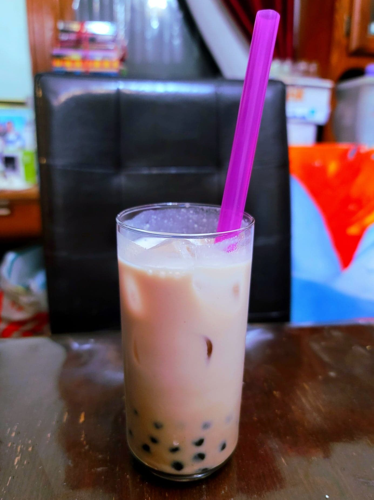

Taro Bubble Tea

Ingredients:
- 600 g Taro, peeled and cubed
- 3 tbsp Sugar, or to taste
- 2 cups Water
- 4 tsp Black tea leaves, or 4 Black tea bags
- 4 tsp Condensed milk
- 4 cups Milk, or as desired for consistency
- 1 1/2 cups Prepared tapioca pearls
Instructions:
- Place the taro into a pot and cover with water. Bring to a boil and then reduce the heat to medium. Let cook for 20 minutes, or until easily pierced with a fork.
- While the taro cooks, bring 2 cups of water to a boil. Remove from heat and add the black tea. Let steep for 10 minutes and then strain out the tea leaves.
- Once the taro is finished, drain out the water from the pot. Using a food processor or an immersion blender, blend together the taro and sugar into a fine paste.
- Add in the black tea, condensed milk, and milk to the taro paste. Mix well or use an immersion blender. Taste and add more milk or sugar as desired.
- Serve cold with the prepared tapoioca pearls and ice.